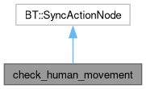

Node tree to check if the human moves while the robot is handing over the object so that we can enforce an emergency stop if the human moves away. More...
#include <check_human_movement.hpp>
Inheritance diagram for check_human_movement:

Collaboration diagram for check_human_movement:

Public Types | |
| using | human_msg = human_msgs::msg::Human |
| using | point = geometry_msgs::msg::Point |
Public Member Functions | |
| check_human_movement (const std::string &, const BT::NodeConfig &) | |
| Constructor of the tree node. | |
| BT::NodeStatus | tick () override |
| Acts based on the actual state of the node. | |
Static Public Member Functions | |
| static BT::PortsList | providedPorts () |
| Override of the helper function of behaviour trees Used to specify which parts of the blackboard the node can access. | |
| static constexpr double | euclidean_distance (const point &p1, const point &p2) |
| Helper function to calculate the Euclidean distance in 3D space. | |
Private Member Functions | |
States | |
Possible actions made by the node depending on the state we're in
| |
| BT::NodeStatus | real_tick (const human_msgs::msg::Human &human_data) |
| Checks whether the human has moved or not. | |
| BT::NodeStatus | false_tick (const human_msgs::msg::Human &human_data) |
| The first time data arrives we don't have an old value to compare to so we cache the msg and assume it's the initial position of the human. | |
Detailed Description
Node tree to check if the human moves while the robot is handing over the object so that we can enforce an emergency stop if the human moves away.
Constructor & Destructor Documentation
◆ check_human_movement()
| check_human_movement::check_human_movement | ( | const std::string & | name, |
| const BT::NodeConfig & | config | ||
| ) |
Constructor of the tree node.
- Parameters
-
name Node name config Configuration of the node
Member Function Documentation
◆ euclidean_distance()
|
inlinestaticconstexpr |
Helper function to calculate the Euclidean distance in 3D space.
- Parameters
-
p1 First point p2 Second point
◆ false_tick()
|
private |
The first time data arrives we don't have an old value to compare to so we cache the msg and assume it's the initial position of the human.
- Parameters
-
human_data Msg containing the actual human position of the node
◆ real_tick()
|
private |
Checks whether the human has moved or not.
- Parameters
-
human_data Msg containing the actual human position of the node
◆ tick()
|
override |
Acts based on the actual state of the node.
- Note
- The states of the node are 2:
- No old data: we cache the arrived msg and treat it as the initial position of the human
- Checking: we compare the new position with the old one
The documentation for this class was generated from the following files:
- /github/workspace/src/mtc/mtc_client/include/mtc_client/check_human_movement.hpp
- /github/workspace/src/mtc/mtc_client/src/check_human_movement.cpp